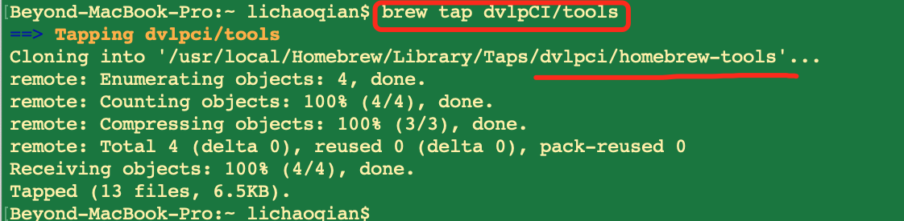
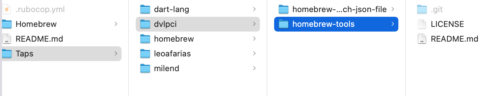
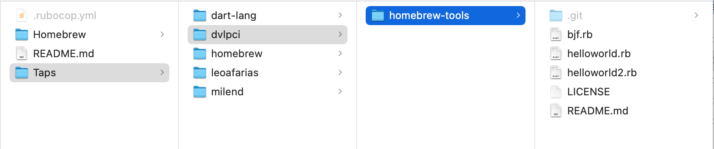
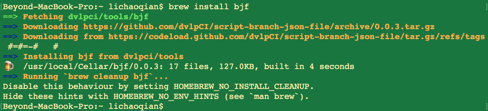
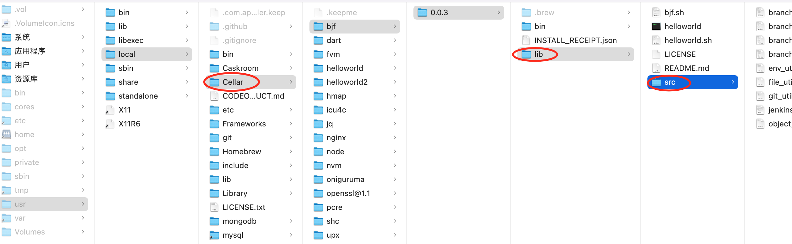

[toc]
Homebrew 的安装见 终端常用命令
创建以 homebrew-开头的工程，如https://github.com/dvlpCI/homebrew-tools
这样执行 brew tap 的时候，就可以只输入brew tap dvlpCI/tools，其会自动映射到dvlpCI/homebrew-tools

如截图，你的远程库索引就会放到本地的以下路径
/usr/local/Homebrew/Library/Taps/dvlpci/homebrew-tools

使用以下命令更新
brew update
brew upgrade tools
更新后

brew install可安装上述 homebrew-tool中的子库
如可执行 brew install brew 也可以 brew helloworld
brew install软件会安装在/usr/local/Cellar/bjf/下

执行结果如下：
如果想要有如下lib/src，则需要在rb文件中
def install
Install script to bin
bin.install "helloworld.sh"
bin.install "bjf"
lib.install Dir["*"] # 记得添加lib目录，并将源码存放于lib里的src下
end

目录/usr/local/Cellar/bjf/0.0.3/lib/src/
验证方式，你brew uninstall的时候也会提示
下载下来的文件存放位置：
/Users/lichaoqian/Library/Caches/Homebrew
1、文件名：
建议文件名都是小写；如果有多个词需连接，建议用-
2、文件内容
文件内容中的类名，必须和文件名一致，且第一个字母大小，其余都是小写。否则会出现如下错误。
存放rb文件
1、正常的脚本开发
2、脚本加密
3、
echo “hello world”
echo “1.1、创建 https://github.com/dvlpCI/script-branch-json-file.git"
echo “1.2、在上述创建的git下创建 helloworld.sh，并编写想要的脚本代码”
echo “1.3.1、shc -r -f helloworld.sh”
echo “1.3.2、修改上述生成的二进制可执行文件helloworld.sh.x名为helloworld(不填的话，你后续使用时候就不能输helloworld，而是要输helloworld.sh)”
echo “1.4、提交文件并打tag到远程”
echo “1.5、假如上述打的tag是0.0.1，则可以直接在浏览器里输入 https://github.com/dvlpCI/script-branch-json-file/archive/0.0.1.tar.gz 来回车下来该文件”
echo “1.6、shasum -a 256 0.0.1.tar.gz”
echo “hello world”
echo “hello world”
echo “2.1、创建 https://github.com/dvlpCI/homebrew-branch-json-file.git"
echo “2.2、在上述创建的git下添加 helloworld.rb 文件及其内容”
echo “hello world”
echo “hello world”
echo “tar -czvf v0.0.2.tar.gz helloworld.sh”
echo “mv v0.0.2.tar.gz archive/“
echo “hello world”
echo “hello world”
echo “brew tap dvlpCI/homebrew-branch-json-file”
echo “hello world”
echo “hello world”